文件系统
- 文件系统的引导区，和操作系统整体的启动过程
6.1 文件
文件是存储在 二级介质（磁盘）中，具名的一系列相关信息集合。不论是用户还是程序都需要通过文件来和二级介质进行信息交换
从用户角度而言，文件是逻辑外存的最小单元，我们只有通过文件才能读写外存
文件有不同的类型，例如数据文件、可执行文件等。数据文件又可能是 numeric, alphabetic, alphanumeric, binary 的。
文件属性
不同的文件系统，会给文件设置不同的属性，也就是文件的meta data，但是通常有以下几个
- name：唯一的以 human - readable 形式保存的信息 文件名
- identifier：让文件系统标志一个文件
- type：有些文件系统有不同类型的文件，用此区分
- location：标记文件在哪个设备，哪个位置
- size：文件的大小，有时也表示其最大size
- protection：文件的访问控制信息，读/写/执行 权限
- timestamp：时间戳，保存了创建时间，上次修改时间，上次使用时间，可以做一些安全保护和监控
- user indentification：用户记录，保存了创建者，上次修改者，上次访问者，可以做一些安全保护和监控
文件系统通过 FCB 来存放控制文件所需要的各种信息的数据结构，FCB都存储在磁盘中，当文件被打开的时候，会从磁盘拷贝到内存中进行使用
文件操作
OS可以通过系统调用，来完成基本的文件操作
- create：首先在文件系统为文件分配一块空间；然后在目录创建对应的条目
-
open / close：打开文件获取文件句柄 handle ，随后对于文件的操作都需要通过这个handle完成
-
一般来说，文件打开之后由用户负责关闭
- 打开后的文件会被加入到一个打开文件表 open-file table 保存所有打开文件的信息，包括文件的 句柄，位置，访问权限等等
- 文件往往会被多个 用户 / 进程 / 线程 打开，当所有用户都关闭文件之后才应当在open file table 中释放掉这个条目，我们会有一个 count 来维护当前文件的打开状态，有点类似智能指针
- read / write 维护一个 current-file-position pointer 进行读写，就像图灵机那样
- repositioning within a file ，就是C语言中的seek操作，重定位 current-file-position pointer 到给定的位置（例如文件开头和结尾）
- delete 在 directory 中找到对应的条目并删除该条目，如果当时对应的文件没有其他的硬链接，就释放器空间，就像智能指针
- turncate 清空文件内容，但保留文件属性
-
locking 由文件系统提供锁服务，例如 shared lock 和 exclusive lock。由此还衍生出两种机制
-
Windows 使用 mandatory lock 一旦进程获取了独占锁，那么操作系统禁止其他进程访问对应文件
- UNIX 使用 advistory lock 进程可以得知锁的状态来自行决定要不要访问
对于文件操作而言，只有打开一个文件需要用到“文件名”，而后续所有的操作（此时文件已经在打开目录表）都只需要文件描述符（UNIX）或者叫文件句柄（Windows）
文件名，不应该是open file list的一部分
而文件打开这个过程，OS往往会使用两级表，
- 整个系统的 list
- 单个进程的 list
当所有进程都关闭该文件时才真正关闭该文件
权限保护
理想状态中，我们应该维护一个访问控制列表（access control list）ACL，描述每个用户对文件所具有的权限。
但是维护ACL是一个性价比很低的行为，会导致原本固定长度的表项变得不定长，因为用户数量是不确定的
因此 Unix 系统中使用了访问权限位（access permission bits）来实现权限控制
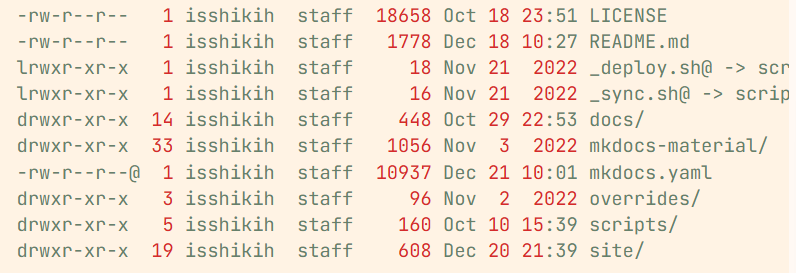
第一列就是我们的 access permission bits
第一个字符表示文件类型，后9个字符才是权限控制，分别表示，文件的所有者（owner），文件所属组（group），其他人（other）的读写执行（rwx）权限
文件类型
- 对于OS来说，文件主要分为 data 和 program
- 对于用户来说，我们会认为后缀名标记了文件类型，其实后缀名只是帮助系统选择合适的方式打开文件，与类型无关
- unix系统会在文件开头，使用一串 magic number 标记文件类型，例如图片文件的开头通常是
0xFFD8，脚本文本文件开头会以类似#!bash 的形式来指定由谁来执行（例如这个是用bash 执行）。但并非所有文件都支持 magic number 的标记
文件结构 * 有空可以再整理一下
是指文件存储数据的结构
- 无结构：流式存储所有的 words / bytes
- 简单记录结构（simple record structure)：将文件以定长/不定长的 record 存储，就比如数据库结构
- complex structures 例如 Word 文档
这部分王道里写的很详细，还有索引文件，索引顺序文件等等内容 王道P257
6.2 访问方式
这部分还不够详细
有以下几种存取方式
- 顺序访问 sequential access
- 直接访问 / 相对访问 / 随机访问 支持以相同的时间访问任意位置
- 索引顺序访问 indexed sequential-access 可能还提供了索引，可以借此访问
6.3 目录结构
文件目录的本质就是文件控制块（FCB）的有序集合。
但是在UNIX系统中，采取了目录和文件描述分离的方法，将FCB拆成一个独立的Inode，而目录仅保存文件名和Inode号，可以有效降低目录的大小以及提高搜索效率（磁盘读取的次数少了）
在Linux中，目录本质上是一个特殊的文件，目录下的文件的元数据存储在目录上。目录的结构就表示了目录下文件的组织方式。
目录实现了 filename 到 FCB 的映射
单级目录 single-level directory
所有的文件被平铺在根目录下
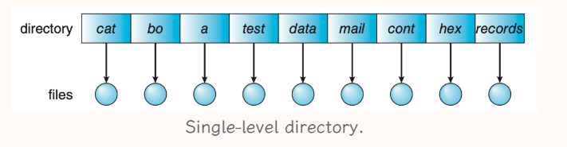
有以下缺点
- 为了实现索引，文件名字必须是唯一
- 文件数量增大之后这个设计会变得不合理，不支持分组
二级目录 Two-level directory
按照用户为依据，形成二级目录，主文件目录（master file directory, MFD） 下为每个用户分配一个用户文件目录（user file directory，UFD）
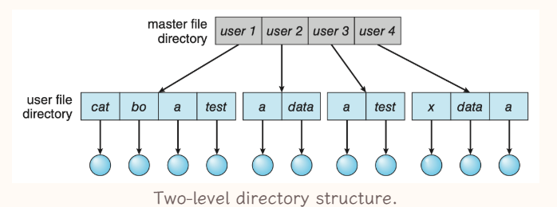
由于出现了分层结构，对文件的索引从文件名变成了文件路径
树形目录 tree-structured directories
将目录本身视为一个特殊文件，使其通用化，使得用户可以自由创建目录进行分组
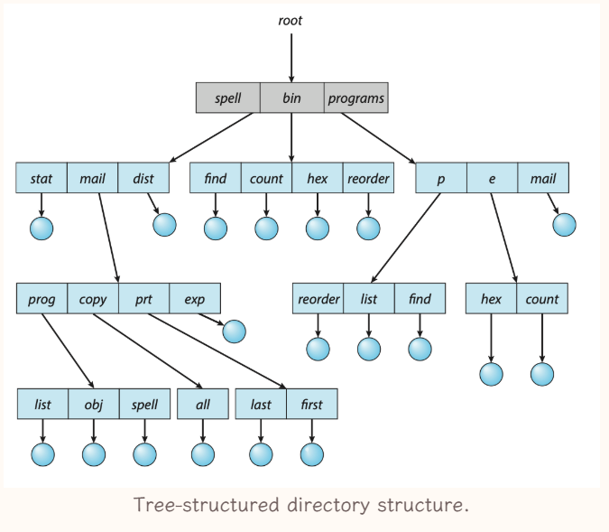
有以下特性
- 非目录节点都是叶子节点
- 目录节点都是非叶子节点（不考虑空目录）
在这个结构中进行文件索引，需要提供文件的路径，有绝对和相对两种，每个进程都有一个current directory，使用当前目录就是相对路径
- absolute path
- relative path
此时才解决了自由分组的问题，使得文件系统的结构化管理能力大大增强
删除目录时，有两种设计
- 不允许删除非空目录
- 删除目录下所有文件
无环图目录 acyclic-graph directories
在树形的结构的基础上，允许目录之间存在链接关系，这种关系支持共享
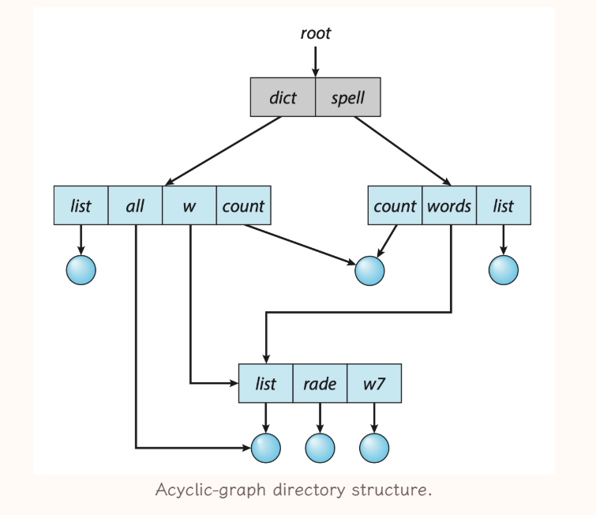
链接关系存在两种
- soft link，又称为 symbolic link 是一个指向文件的指针，类似与快捷方式。删除文件的时候不会顺带处理 soft link，但是其已经失效了，当用户试图访问的时候会表示出文件已经删除，就相当于一个轻量的特殊文件
-
hard link，复制链接文件目录项的所有元数据，存储到目标目录中，此时文件平等地属于两个目录，是真正的指针拷贝，hard link 是目录表项
-
当文件元信息更新的时候，需要保证其各个hard link也同步更新
- 当该文件有硬链接存在的时候，其被删除时不会真正被删除，而是删除了对应指针+同步更新元数据，直到其 reference number 变为了0，文件才会被删除
UNIX同时支持上述两种链接
这种类型的目录结构存在以下特点
- 为了保证无环，我们只允许创建关于文件这种叶子节点的硬链接，而不允许创建目录的硬链接，但是其会创建对
. 和.. 的硬链接 - 硬链接本质是表项，其与文件系统相关，所以硬链接只能在同一文件系统下创建，不能跨过 file-system boundary
通用图目录
本质上和无环图目录相同，区别在于其避免死循环的机制不同，允许目录存在环，但在操作时通过算法来避免出现问题，例如图处理算法和垃圾回收机制等等
通过类似于 garbage collection 的算法可以确定哪些文件可以删除，但是会比较费时
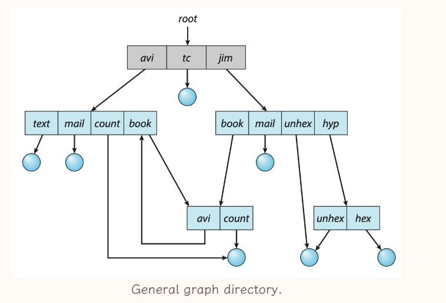
6.4 文件系统
文件系统 file system 存储在二级存储上，为OS提供快速，便捷的对磁盘数据的操作。
文件系统是OS中，以文件的方式管理计算机软件资源的软件，以及被管理的文件和数据结构的集合
现在的OS都支持多种文件系统
- Unix 使用 Unix FS (UFS)，它基于 BFFS (Berkeley Fast FS)；
- Windows 支持 File Allocation Table(FAT), FAT32 和 Windows NT File System (NTFS)；
- Linux 的标准文件系统是 extended file system，最常见的是 ext3 和 ext4。不过 Linux 支持 40+ 种 FS。
挂载 mount
挂载是指将一个文件系统的根目录挂载到另一个文件系统的某个目录中（该目录称为mount point）。这使得该目录下的文件可以访问到被挂在的文件系统中的文件。
只有被挂载了，一个文件系统才能被访问
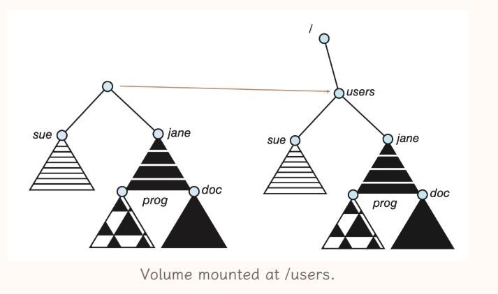
文件系统分层设计
文件系统被分为多层的模块，向上与 Application Programs 请求交互，向下与 device 交互
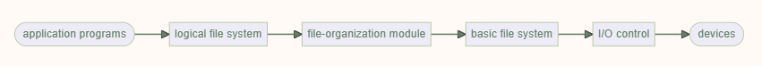
-
I/O control
-
向下控制 IO devices 向上为文件系统提供对其的IO功能
-
包含 device drivers 和 interrupt handler 与具体的device进行交互，同时向上层屏蔽相应的特征
- device drivers为上层提供了一套统一的接口，往往是一系列异步中断处理方案
- Basic file system
-
向下发出抽象的操作指令，例如读和写
- 与IO调度相关
-
管理 memory buffer 和 caches
- buffer 的作用在于优化外部排序
- cache 会用来存储一些频繁用到的文件系统元数据，以提高文件系统性能，管理file system, directory 和 data block的缓存
- File-organization module
-
以 basic file system 的功能为基础
- 实现了 file 的 logical block 到 physical address 的映射
-
包括了 free-space manager
- 维护了那些没被分配的blocks，并在file-organization module 请求的时候提供这些blocks
- Logical file system
-
存储文件系统的结构信息，不包括实际的文件内容信息，管理所有的metadata，其实就是管理目录和FCB
- 其会维护 directory 的信息，为file organization module 提供一些信息，例如符号文件名
- FCB（file control block） 会维护被打开的文件的一些具体信息
- 将读写 “文件名” 的指令转换成 读写 “logical block”
- Application program: 发出 read / write / open 某个 file path 的指令，传递给下一层
分层的设计可以降低文件系统本身的复杂性和冗余性，但是可能一定程度上影响性能
6.5 文件系统的实现 *
为了实现文件系统，我们需要在硬盘和内存中维护一些数据结构
硬盘数据结构 on-disk structures
-
Boot control block
-
per volume 每个卷有一个这样的结构，前提是这个 volume 是 boot parition
- 操作系统被保存在引导控制块 Boot control block 中，是操作系统所在Volume的第一个block
- 这里存储 引导 OS 需要的信息
- 在 UFS 中，boot control block 也被称为 boot block；在 NTFS 中，也被称为 partition boot sector。
-
Volume control block
-
per volume
- 卷控制块 Volume control block 维护了volume中的具体信息，例如其中的blocks数量，空闲block数量和指针，空闲PCB数量和指针
- 在 UFS volume control block 也被称为 superblock；在 NTFS 中，也被称为 master file table
-
Directory structure
-
per FS 每个文件系统有一个
- 目录结构 Directory structure 用来组织files，同时维护files的元信息
- 在 UFS 中，它维护了文件以及对应的 inode numbers；在 NTFS 中，它在 master file table 中被维护。
-
File control block
-
文件控制块（file control block FCB) 维护了被打开的文件的具体信息，PCB一般有一个唯一的标识符与目录项相关联
- 一般包含 文件权限，文件操作日期，size，位置等等
- 在 UFS 中，FCB 指的就是一个 inode；在 NTFS 中，PCB 通常在 master file table 中被维护，其维护形式类似于关系形数据库。
- 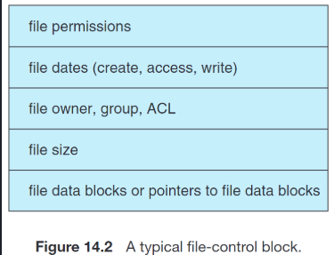
内存数据结构 In-memory structures
-
Mount table
-
被挂在的volume会被记录在mount table中
-
Directory cache
-
为了提高文件系统的性能，一些最近被访问的目录信息会被缓存到内存里，这些目录信息就是 Directory cache
-
System-wide open-file table
-
记录这个系统中所有进程打开的文件
-
Per-process open-file table
-
记录每个进程打开的文件，其entry指向 system-wide open-file table 里的entry
-
Buffers
-
在内存中，用于缓存 disk block 的内容
- 当读disk block的时候，其内容会被放到buffer中，当要写disk block的时候，会先写入buffer中
- 通过上述方式，buffer可以实现统一CPU和IO设备之间的速度差异
文件操作的实现
-
file creation
-
当应用程序需要创建的文件的时候，会调用 logical file system，并给出文件名，以此更新 Directory
- 创建文件的时候，一个对应的FCB会被创建，对应的 Parent Directory会被载入内存进行更新
-
file open
-
当我们需要打开文件的时候，首先会在 system-wide open-file table 查找这个文件，若是找到了则说明其正在被其他文件使用，可以直接进行下一步。
- 若没有找到，则需要在Directory structure中查找这个文件，找到之后将其FCB复制进入 system-wide open-file table 表示该文件被打开
- 随后在该进程的 per-process open-file table 创建一个entry，指向 system-wide open-file table 中的entry，表示该进程打开了这个文件，并使得其entry += 1
- 随后对于文件的操作都依赖于 system-wide open-file table 中的entry指针，UNIX中成为 file descriptor，Windows中称为 file handle
-
file close
-
先删除per-process open-file table中的entry
- 将 system-wide open-file table 中的 entry 的 reference counter -= 1，若此时RC为0，则删除该entry 并且更新 Directory structure 中的信息
Virtual FS
VFS将操作和实现分开，将接口定义为了几个操作 open read write close 等等，需要我们去对应位置找到函数指针。
这种设计使得我们可以支持多种不同类型的文件系统
目录的实现
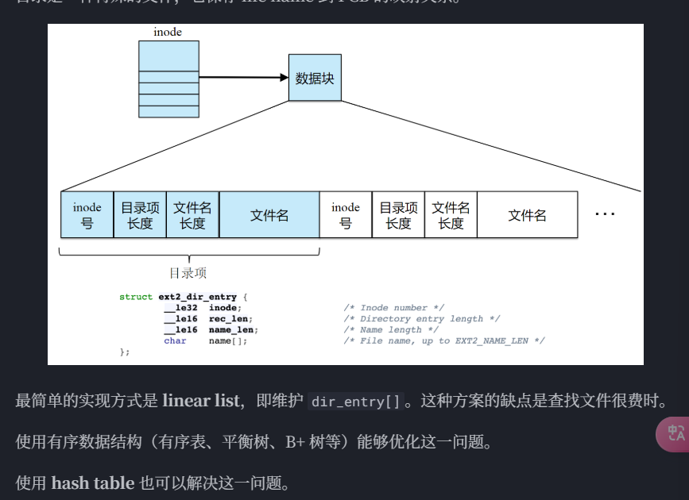
-
linear list based
-
通过线性表（数组 or 链表）来存储目录信息，每个目录项包括 file name 和 指向 FCB / Inode 的指针
- 优点：实现简单
- 缺点：检索效率较低
- 使用有序数据结构，例如平衡树，B+ 树等等，可以改善缺点
-
hash table based
-
通过hash table 来存储目录信息，每个目录项包含了 file name 和 指向 FCB / Inode的指针，可以直接通过hash function完成查找工作
- 优点：检索效率高
- 缺点：可能会有冲突问题，但可以解决，对容纳内容大小有假设
块分配和块组织 disk block allocation
这一部分描述了文件如何使用 disk space
- continuous allocation
每个文件占据一段连续的block，具体的分配方案也可以 first fit, best fit 等等
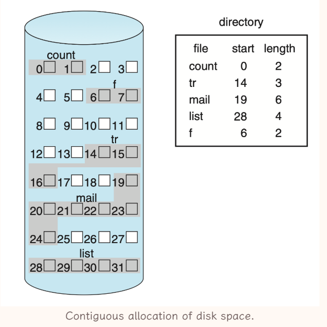
-
优点：
-
实现简单，只需要存储 start block 和 length
- 文件访问效率高，有效降低 seek time
- 支持 random access ?
-
缺点：
-
分配时难以找到合适的空间，需要遍历
-
文件动态变化，变小会产生外部碎片，变大可能没有连续空间（可以通过 compaction 和 defrag 等操作解决外部碎片）
- 文件动态变大的问题，可以通过extent来解决，也就是再维护一个链表，不够大的时候再分配一块连续空间
- linked allocation
每个文件都是block组成的链表，FCB中记录头和尾，block中存储了next address pointer
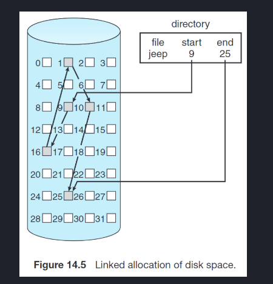
-
优点
-
无外部碎片
-
缺点
-
读一个文件需要较多的 IO 和 disk seek （多个块组成cluster 但是会有内部碎片）
- 每个块中有几个字节作为 pointer 的overhead
- pointer 损坏会出现问题 （使用更多冗余信息）
FAT使用的就是 linked allocation
- indexed allocation
给每个文件首先分配一个block，该block里存储了这个文件的第i个块在磁盘的哪里，就维护一个数组，FCB里存储这个indexed block放在哪里即可
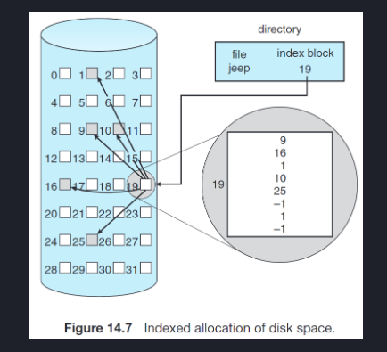
-
优点
-
支持 random access
- 无外部碎片
-
缺点
-
索引块本身是开销
- 索引块设计问题，一边是希望overhead不要太大，一边要支持大文件的索引，有以下实现思路
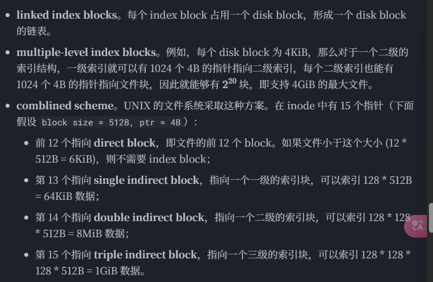
Free-Space Management
这个在王道有更详细的描述 P295
6.6 典型文件系统
习题收录
王道
- 打开文件的操作的主要工作是：将指定文件的目录项复制到内存对应区域（并非找到文件）
-
FAT32 的文件目录项不包括：文件控制块的物理位置（只会有文件的物理位置）
-
什么是文件目录项：文件目录项是 “file name 和 FCB” 的对
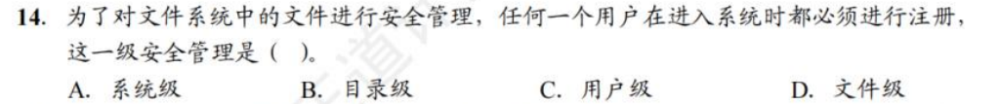
- 答案是 A
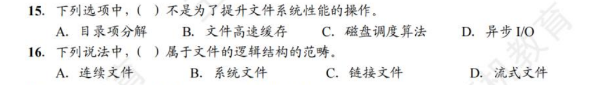
- 答案是 D D
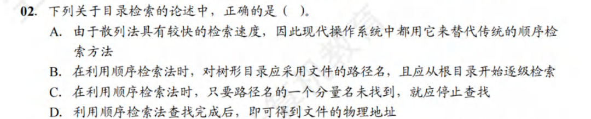
- 答案是 C 但是似乎不在考试范围内
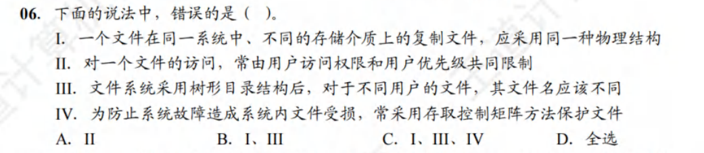
- 答案是D，其中第二个说法错误，常由用户访问权限和文件属性共同限制
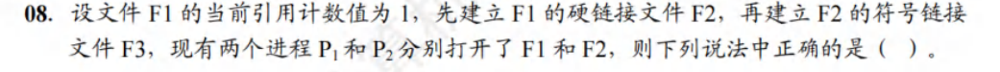
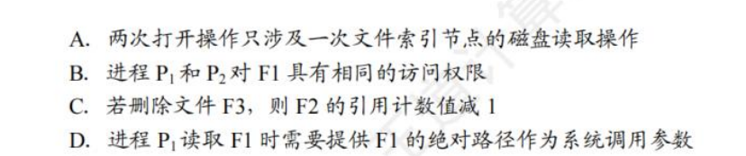
- 答案是A
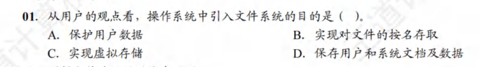
- 答案是B，奇奇怪怪的理解题
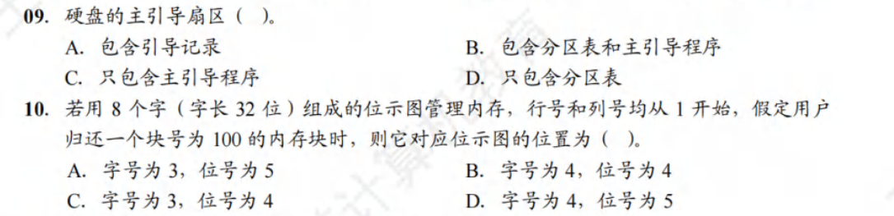
- 两个答案都是B
jjm hw
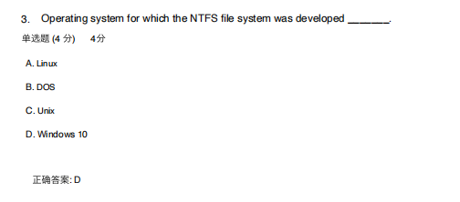
- a4里有 但是感觉不是很全
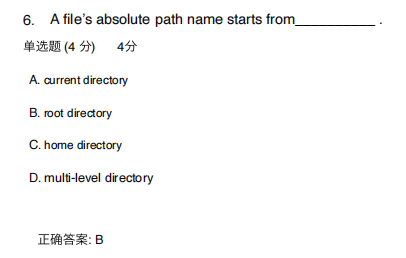
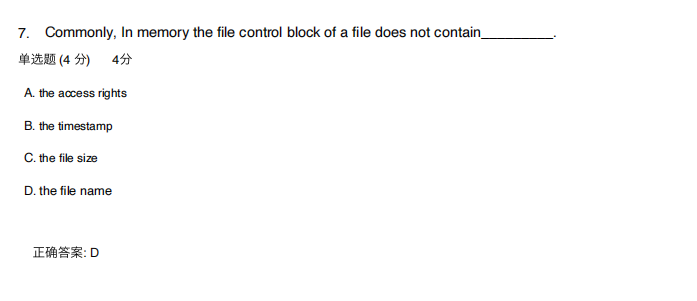
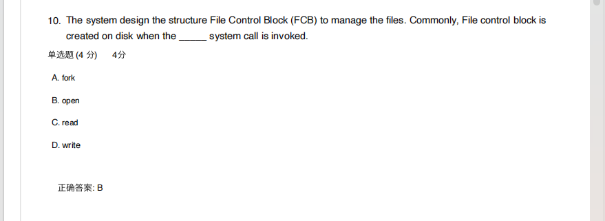
- FCB是在open的时候被创建的？
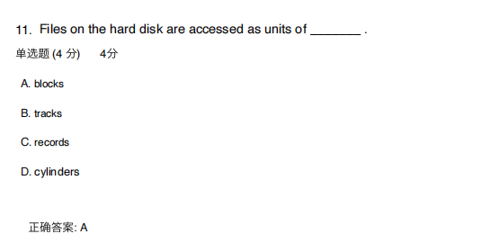
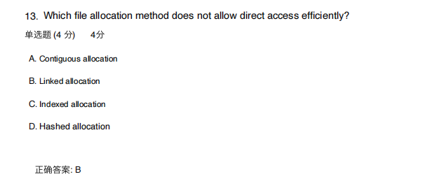
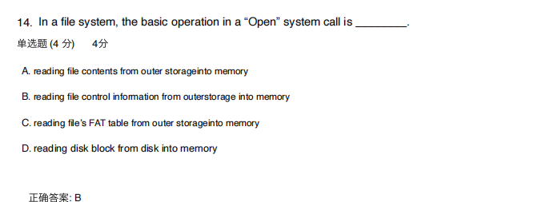
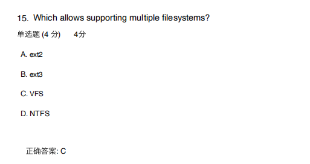
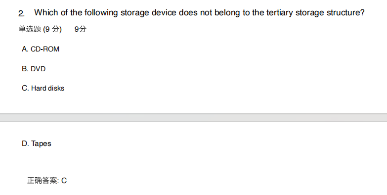
- 磁盘那边的Homework还要再看一遍